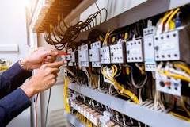

؟؟؟ الکترونیک چیست
الکترونیک به زبان ساده :
الکترونیک مطالعه و استفاده از وسایل الکتریکی می باشد که با کنترل جریان الکترون
ها یا ذرات باردار الکتریکی دیگر در اسبابی مانند لامپ خلا و نیمه هادی ها کار می کنند
کمی پیچیده تر:
به طیف گسترده ای از الکتریسیته اطلاق می شود که با حرکت الکترونها در انواع مدارات نیمه هادی سر و کار دارد.
IC .اختراع ها سبب آن شده است که دگرگونی های فراوانی در این علم پدیدار گشته و سیستم های مدرن الکترونیکی از جمله مدارهای کنترل از راه دور، ماهواره های فضایی، رباتها و … را پدید آورد.
BEC

قطعات الکترونیک
به طور کلی الکترونیک بسیار قطعه دارد و هر روز همه به ان ها افزوده میشود ، اما انهایی که حدقل در همهی وسایل الکترونیکی وجود دارد در پایین قرار دارند
اگه میخوای واضح تر ببینی رو عکس کلیک کن

تعداد زیادی از قطعات الکترونیکی وجود دارند که برای ساخت مدارهای الکترونیکی از آنها استفاده میشود. بدون این قطعات الکترونیکی مدارها هرگز کامل نیستند یا عملکرد خوبی ندارند. از این قطعات الکترونیکی میتوان به مقاومتها، دیودها، خازنها، مدارهای مجتمع و... اشاره کرد. برخی از این قطعات از دو یا چند ترمینال تشکیل شدهاند که به برد مدار لحیم میشوند. برخی ممکن است در قالب مدارهای مجتمع یا همان آیسیها باشند که در آنها قطعات نیمههادی مختلفی یکپارچه شدهاند. در این مطلب از مجله فرادرس، مروری بر هر یک از این قطعات الکترونیکی و تجهیزات مورد استفاده در الکترونیک خواهیم داشت.
ر طراحی یک مدار الکترونیکی باید موارد زیر را در نظر داشت:
قطعات الکترونیکی اصلی: خازنها، مقاومتها، دیودها، ترانزیستورها و...
منابع توان: ژنراتورهای سیگنال و منبع تغذیه DC.
ابزار اندازهگیری و تجزیه و تحلیل: اسیلوسکوپ پرتو کاتدی (CRO)، مولتیمتر و غیره.
more information


.png)
درامد زایی از الکترونیک
طلاع از میانگین حقوق برای گروههای شغلی مختلف مثل درآمد مهندس برق قدرت یا درآمد رشته الکترونیک همیشه دغدغه کارجویان و کارفرمایان بوده است. کارجویان تمایل دارند با اطلاع از میانگین حقوق در شغل خود، از منصفانه بودن حقوقشان مطمئن شوند و کارفرمایان نیز برای استخدام مهندسین برق بتوانند مبلغ مناسبی را به او پرداخت کنند.
سطح کارشناس: بر اساس این گزارش، میانگین درآمد مهندس برق در سال 1400 در تهران حدود 6.5 میلیون تومان بوده است و کمترین مبلغ در این سطح شغلی 3.5 میلیون تومان و بیشترین مبلغ، 12.6 میلیون تومان ابراز شده است. همچنین پیشبینی میشود که میانگین حقوق مهندس برق در سال 1401 به 8.4 میلیون تومان برسد. کمترین مبلغ درخواستی در گروه شغلی برق در سال 1401، حدود 4.6 میلیون تومان و بیشترین مبلغ مورد انتظار 16.1 میلیون تومان در نظر گرفتهشده است.
سطح کارشناسی ارشد: مهندسین برقی که سابقه کاری بیشتری دارند و به سطح کارشناسی ارشد رسیدهاند حقوق بیشتری دریافت میکنند و انتظار افزایش حقوق بیشتری نیز در سال 1401 داشتهاند. میانگین درآمد ماهانه مهندس های برق در سطح کارشناسی ارشد در سال 1400 حدود 8.5 میلیون تومان بوده است و این افراد انتظار دارند در سال 1401، مبلغ دریافتیشان به 11 میلیون تومان در ماه برسد.
سطح مدیر: مهندسین برقی که با سالها سابقه کار به سطح مدیریتی رسیدهاند در سال 1400 بهطور میانگین 11 میلیون تومان در ماه دریافت میکردند. این متخصصین در سال 1401 انتظار دارند درآمد ماهیانهشان به 13.8 میلیون تومان برسد.
مطالب مرتبط: آگهی های استخدام مهندس الکترونیک

میانگین حقوق و درآمد مهندس برق در شهرهای بزرگ ایران
در نظرسنجی جاب ویژن، شهرهای کرج، مشهد، اصفهان، شیراز، تبریز و اهواز به عنوان شهرهای بزرگ در نظر گرفته شدهاند.
سطح کارشناس: در شهرهای بزرگ، میانگین حقوقی که یک کارشناس برق در سال 1400 دریافت میکرده برابر با 6 میلیون تومان بوده است. افراد شاغل در این سمت، انتظار دارند در سال 1401 درآمد ماهیانهشان با افزایش 30% به 7.8 میلیون تومان برسد.
سطح کارشناسی ارشد و مدیر: مهندسین برق در رده ارشد و مدیریت که در شهرهای بزرگ مشغول به کار هستند در سال 1400 بهطور میانگین ماهانه 8 میلیون تومان درآمد داشتند. به همین منوال، این مهندسین توقع دارند حقوق ماهیانهشان در 1401 به 10.4 میلیون تومان برسد.
BEC

more information
اموزش الکترونیک
برای شروع کار در زمینه الکترونیک، لازم است که مفاهیم پایه الکترونیک را بدانیم. ما در صفحه آموزش الکترونیک به طور کامل مفاهیم مورد نیاز برای شروع کار در الکترونیک و برنامه نویسی الکترونیک را بررسی میکنیم. این آموزش مفاهیم مبتدی را در بر میگیرد و رایگان است.
BEC
- مبانی پایه الکترونیک
- برق چیست
- ولتاژ و جریان
- PCB
- توان الکتریکی
- مدار چیست
- اتصال سری و موازی
fa.wikipedia.org
دانشی است شامل فیزیک، مهندسی، فناوری و کاربردهایی که با جریان و کنترل الکترونها در خلا و ماده سروکار دارد.در الکترونیک برای کنترل جریان الکترون از دستگاههای فعال تقویت و یکسوسازی استفاده میشود، در حالیکه در مهندسی برق کلاسیک از اثرات غیرفعال مانند مقاومت، خازن و القاگر برای کنترل جریان الکتریسیته استفاده میشود.
خرابی قطعات
توخونه یا محل کار دستگاهی داری که کار نمیکنه و بهت گفتن بردش سوخته و باید کل برد رو عوض کنی و تو این تحریم ها دیگه اونو گیر نمیاری و مجبوری کلا دستگاه رو عوض کنی یه لحظه رو لینک زیر کلیک کن تا شاید بتونی با کمک هوش مصنوعی قطعه خراب رو پیدا کنی و عوضش کنی
ورود به صفحه تعمیر قطعات